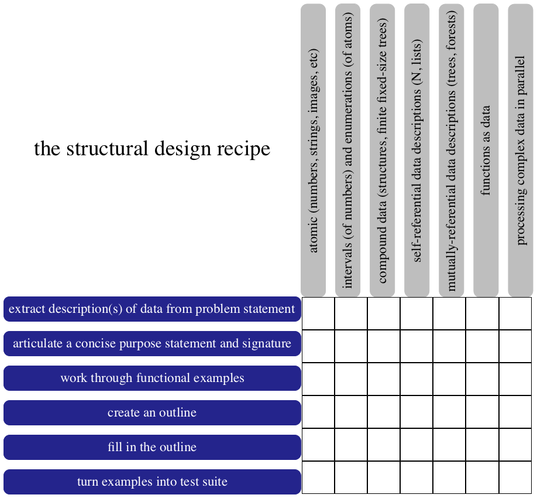
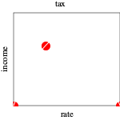
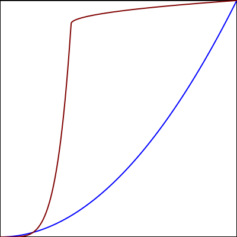
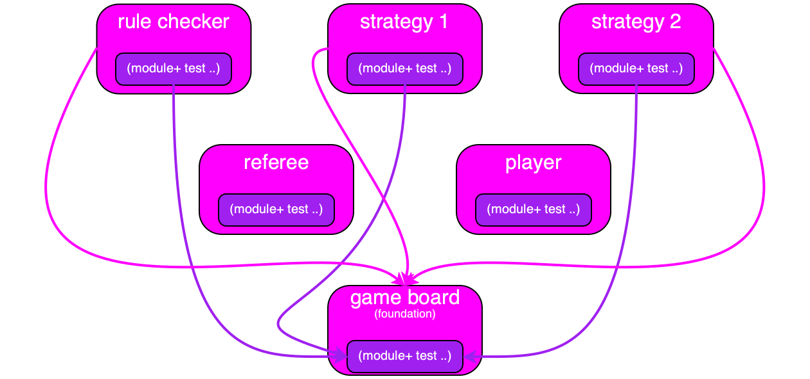
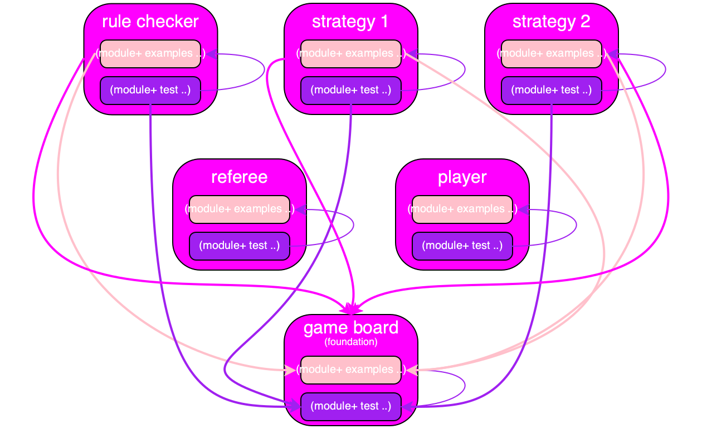
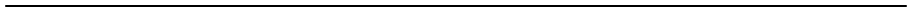
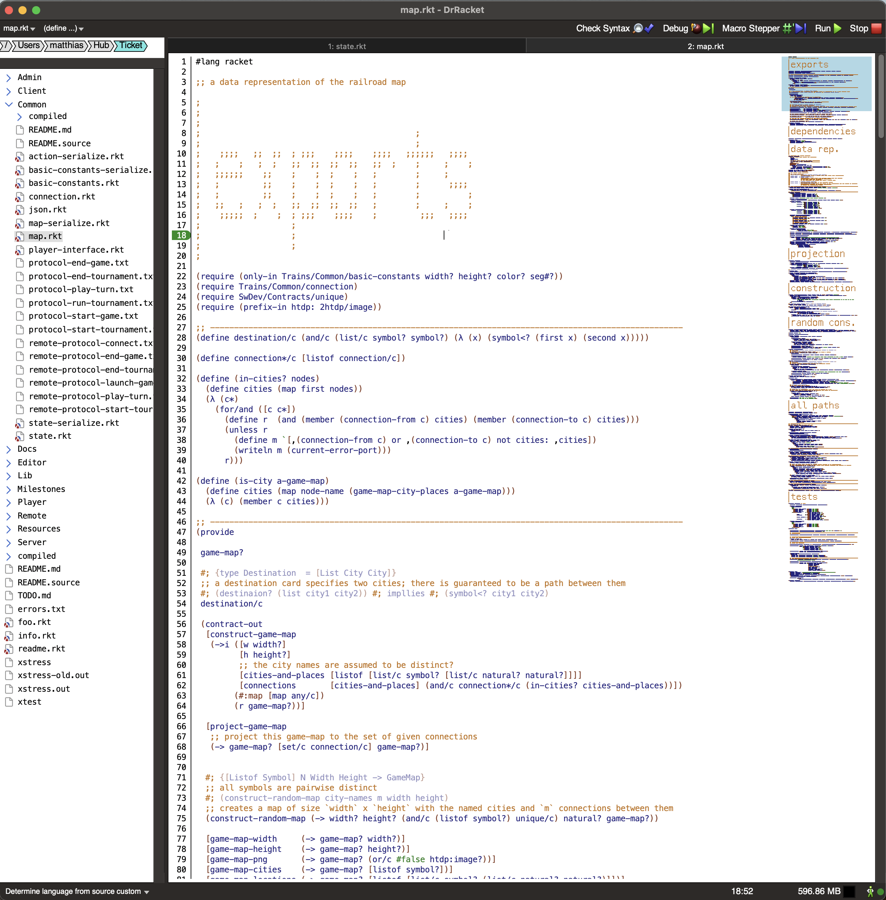
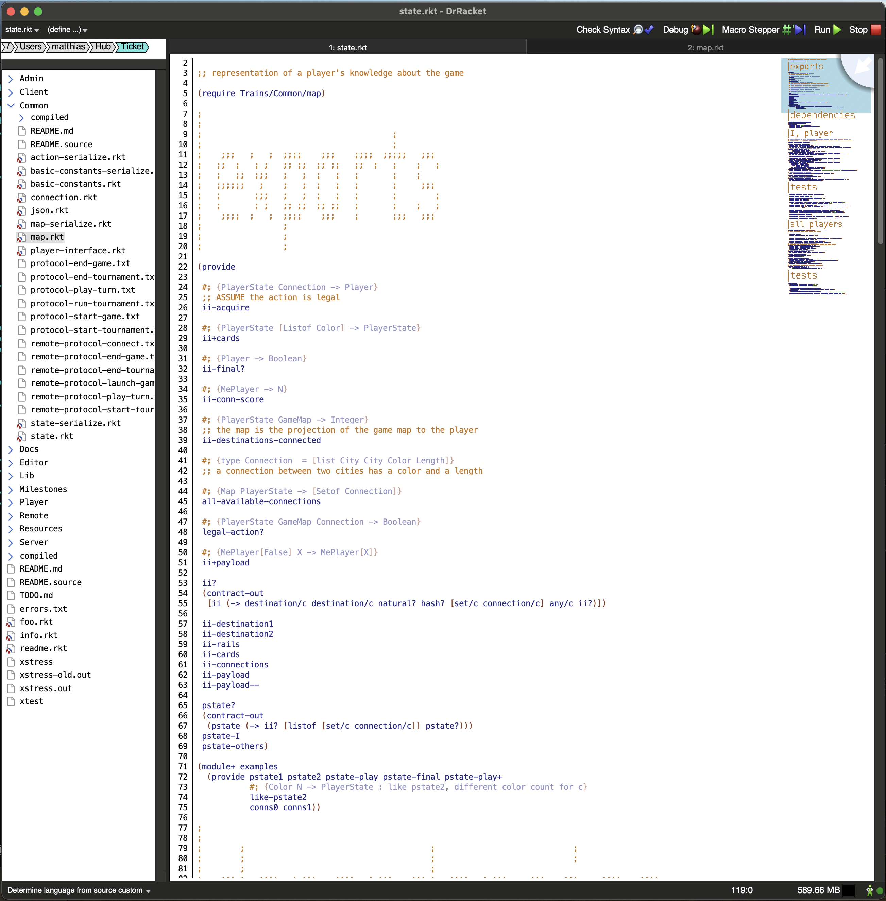
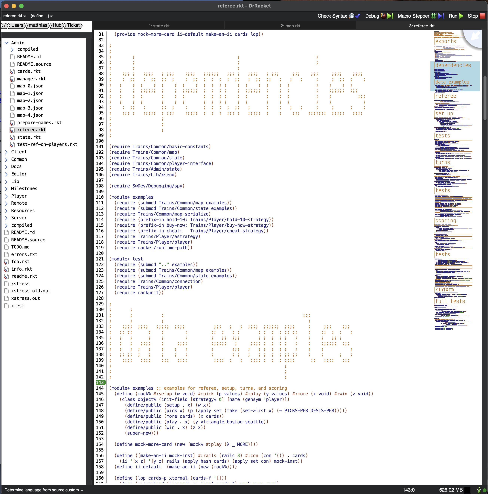
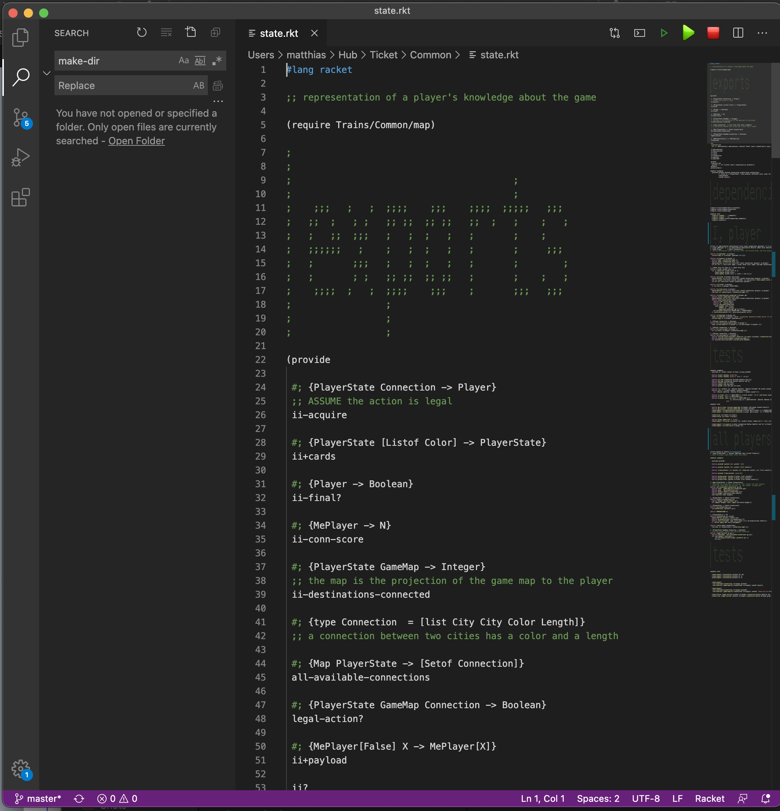

Modular Programming
31 Aug 2021
Changed in version 1.5: Tue Feb 22 18:34:22 EST 2022, Added a link to Sid Kasivajhula’s blog post.
Changed in version 1.4: Sat Feb 19 16:00:09 EST 2022, Leif Andersen wondered how to fail gracefully.
Changed in version 1.3: Thu Feb 17 11:34:02 EST 2022, Ryan Culpepper sent in some clarifying edits.
Changed in version 1.2: Fri Feb 11 09:11:46 EST 2022, Michael Ballantyne suggested some links and noticed some typos.
Changed in version 1.1: Tue Jan 25 10:41:19 EST 2022, clarify purpose
Changed in version 1.0: Sun Jan 16 19:06:19 EST 2022, initial release
Racket’s module system is a powerful tool for organizing programs. Its contract system empowers programmers to specify module interfaces with any desired precision. Even the most basic unit testing facilities suffice to set up a sophisticated unit test suite. The combination is awesome.
I have used these three for the past decade to organize the code base for reasonably large semester-course projects (about 3-5Kloc, w/o comments; not that lines is a good measure). Over this time I have worked out basic organization principles for modules, tests, etc. that are rather effective for the intended kind of application program.
The proposed organization works well for the creation of stand-alone (binary) executables and their distribution. It builds on the principles of How to Design Programs, placing examples near data definitions, systematically building tests from the examples, using simple tests to illustrate the workings of a function, and so on. For libraries and frameworks, however, a different organization is called for. In these cases, it is probably best to consider an organization that separates functionality from examples and tests into separate files. Doing so it helps with the management of the size of the download. Also see Why Not Leave It To Tools.
Assumption The reader has some familiarity with Racket’s structs and functions.
The reader who is somewhat familiar with modules, contracts, and tests may wish to focus on those sections whose title contains the word “organization.”
An experienced Racket programmer may wish to read just Organizing Modules.
All readers should consider this write-up as an elaboration of the module chapter in the Racket Style Guide.}
The Basic Mechanics
A Racket module is a collection of definitions and expressions. Syntactically it is an S-expression of the shape (module Id Lang X ...) where X ... is a sequence of definitions, expressions, provides, requires, and more modules. The Lang stands for a language in the Racket universe; Id is the name of the module. A provide specification enumerates the identifiers that are visible outside of the module. A require specification brings identifiers from some other module into scope; its argument is a module path: a quoted file name in the simplest case, a path such as racket/list into a Racket collection, and some more.
"module-example.rkt"
(module module-example racket/base (provide many) (require racket/list) (displayln 'module) (define (many n) (build-list n values))) "module-example.rkt"
#lang racket/base (provide many) (require racket/list) (displayln 'module) (define (many n) (build-list n values)) Figure 1: A plain Racket module
the first line specifies Lang via a #lang line;
the module name is inferred from the name of the code’s file container;
the sequence of Xs is not indented.
A module with a module is a submodule. Figure 2 shows a
simplistic example of a submodule that is immediately required into its
surrounding—
"sub.rkt"
(module module-example racket (provide many) (displayln 'module) (module sub racket/base (provide many) (require racket/list) (define (many n) (build-list n values))) (require (submod "." sub))) "sub.rkt"
#lang racket (provide many) (displayln 'module) (module sub racket/base (provide many) (require racket/list) (define (many n) (build-list n values))) (require (submod "." sub)) Figure 2: A Racket sub-module
A (submod ...) form in a require can also use path to import identifiers from other files. For example, writing (submod "sub.rkt" sub) in a file/module in the same folder as "sub.rkt" imports many.
Requiring a module does not require its submodules and requiring a submodule loads only as much of the surrounding module as required.
Details Racket’s language of modules is far more sophisticated than the this section lets on. If interested, consult the relevant chapter in the Racket Guide.
Contracts
A provide specification is a simplistic way to describe the interface of a module. If every provided identifier precisely describes the exported functionality, it may suffice to enumerate just these identifiers. But this is rarely the case.
The most basic step is to add How to Design Programs’s signatures and purpose statements, comments that describe the inputs and outputs of a function in the author’s (imaginary and unchecked) type system. For example, the module from figure 1 may come with comments such as those:
#lang racket/base (provide #; (Natural -> [Listof Natural]) ;; (many n) creates (list 0 ... n-1) many) (require racket/list) (define (many n) (build-list n values))
Racket’s sophisticated contract system provides the mechanism for checking such obligations and promises. A contract is actually just ordinary Racket code. In the simplest case, it is a predicate on values. predicates on functions (as computer scientists know), objects, and so on can’t be just checked like predicates on plain values. For these cases, it helps to use a notation similar to type systems to keep them concise and yet readable.
#lang racket/base (require racket/contract) (require racket/math) (provide (contract-out [many ;; (many n) creates (list 0 ... n-1) (-> natural? (listof natural?))])) (require racket/list) (define (many n) (build-list n values))
#lang racket/base (require racket/contract) (require racket/math) (provide (contract-out [many ;; (many n) creates (list 0 ... n-1) (->i ([n natural?]) (result (n) (and/c (listof natural?) (lambda (l) (= (length l) n)))))])) (require racket/list) (define (many n) (build-list n values))
->i tells a reader that the pieces of the contract depend on each other;
([n natural?]) specifies a name and the contract of many’s argument;
(result (n) ...) signals that the contract for the result depends on n;
(and/c (listof natural?) ...) means the contract of the result consists of several pieces, the first of which is the same as above;
(lambda (l) ...) is the second piece of the and/c contract, and it is a predicate that checks whether the list is of length n.
#lang racket/base (require racket/contract) (require racket/math) (provide (contract-out [many ;; (many n) creates (list 0 ... n-1) (->i ([n natural?]) (_ (n) (and/c (listof natural?) (lambda (l) (= (length l) n)) (or/c empty? (lambda (l) (and (= (first l) 0) (= (last l) (- n 1))))))))])) (require racket/list) (define (many n) (build-list n values))
If curious, consider writing a contract that completely replaces the purpose statement. Doing so should not be a mystery.
Details Contracts come with a cost. This essay does not address this point. If interested, consult the relevant chapter in the Racket Guide. The essential advice is to articulate contracts that express important properties, usually less than a full specification.
Organizing Modules (1)
When a contract becomes complicated, it is best to define it separately. In the running example, the result contract consists of three pieces, combined via and/c. The first piece is constructed from built-in contract notation; but the second and third are user-designed. Indeed, the third piece alone covers three lines. All of this calls for giving the contract and its pieces meaningful names.
The question is how to organize the resulting code.
#lang racket/base (require racket/contract) (require racket/math) (define (list-of-nats-from-0-to n) ; exclusive (and/c (listof natural?) (of-length n) (from-zero-to n))) (define ((of-length n) l) (= (length l) n)) (define (from-zero-to n) ; exclusive (or/c empty? (lambda (l) (and (= (first l) 0) (= (last l) (- n 1)))))) (provide (contract-out [many ;; (many n) creates (list 0 ... n-1) (->i ([n natural?]) (_ (n) (list-of-nats-from-0-to n)))])) ;; - - - - - - - - - - - - - - - - - - - - - - - - - - - - - - - - - - - - (require racket/list) ;; - - - - - - - - - - - - - - - - - - - - - - - - - - - - - - - - - - - - (define (many n) (build-list n values))
All pieces of the interface contract are placed near the top.
The code above the dashed is the module’s interface.
The first require specification imports the contract notation.
- The two requires are followed by three contract definitions:
The first function, list-of-nats-from-0-to, introduces a descriptive name for the overall contract. It abstracts over the argument, n, and returns the above-described and/c contract.
The second piece of the and/c contract also comes with a name: of-length. Its definition introduces a curried function, which consumes the argument n of many and returns the expected predicated on lists.
The third piece of and/c is again a function over contracts.
The last piece of the contract section is the provide specification. This is preliminary; see Organizing Modules.
Unit Tests
The final step of the design recipes in How to Design Programs calls for the translation of worked examples into unit tests. A test consists of two pieces: input values for the arguments and an expected output value.
applying many to 3 should yield (list 0 1 2).
(check-equal? (many 3) (list 0 1 2))
#lang racket/base (require racket/contract) (require racket/math) (provide (contract-out [many ;; (many n) creates (list 0 ... n-1) (-> natural? (listof natural?))])) (require racket/list) (define (many n) (build-list n values)) (module+ test (require rackunit) (check-equal? (many 3) (list 0 1 2)))
The (module+ Id ...) form creates a new submodule with the name Id. Unlike (module Id Lang ...), such a module inherits the language of the surrounding module and all definitions in the surrounding module are implicitly required. That is, these definitions are automatically visible within this submodule.
$ raco test module-example.rkt |

Contracts and Tests
(many -3)
Why didn’t the contract catch this bad argument value?
While a (module+ ...) submodule auto-imports all definitions, it does so directly without going through the surrounding module’s interface. In the terms of the contract library, the bad argument value does not cross the module boundary between the outer module and the submodule.
(check-exn exn:fail:contract? (λ () (many -3)))
Details The RackUnit framework is an amazing library. If you are unfamiliar with its capabilities, read the guide to RackUnit.
Organizing Modules (2)
Passing unit tests are reassuring. They certainly expose typo-level bugs. They occasionally point out flaws in the logic. And they serve as a simple form of documentation, which is why having them in the same file is a good idea.
In an untyped language such as Racket, it is also good practice to document
calling conventions next to the implementation of a function. Then, when
a developer has to study the function definition (rather than just read a
module’s interface), a nearby working test can demonstrate the basics of a
function—
Once again, module+ submodules help implement this idea. When the compiler encounters a module, it first creates a single submodule from all the module+ submodules that share the same name. It accomplishes this by concatenating the code of these modules. The synthesized complete submodule is placed at the end of the outer module.
#lang racket/base (require racket/contract) (require racket/math) (provide (contract-out [many ; (many n) creates (list 0 ... n-1) (-> natural? (listof natural?))])) ;; - - - - - - - - - - - - - - - - - - - - - - - - - - - - - - - - - - - - (require racket/list) ;; - - - - - - - - - - - - - - - - - - - - - - - - - - - - - - - - - - - - (module+ test (check-equal? (many 3) (list 0 1 2))) (define (many n) (build-list n values)) ;; - - - - - - - - - - - - - - - - - - - - - - - - - - - - - - - - - - - - (module+ test (require rackunit) (require (submod "..")) (check-exn exn:fail:contract? (λ () (many -3))) (check-equal? (many 3) (list 0 1 2)) (check-equal? (many 0) (list)))
Unit tests go into a module+ submodule at the bottom of the program.
Place illustrative unit tests next to function definitions, also in module+.
First, the tests come with the functionality, meaning there’s no need to search the file system for them.
Second, a developer looking for the tests navigates to the bottom of the module.
Third, simple tests close to a function’s definition illustrate its workings for the reader.
Fourth, running the tests is straightforward; see DrRacket and raco above.
Finally, even though the tests are placed together with the functionality, a production run of the software system need not require the tests and thus does not load the test code; the code size remains what a developer expects.

Running Tests Selectively
Factoring out tests into separate submodules adds another advantage. Say your module includes two classes of functions for some data: regular functionality on data and functions that visualize data. Developing or maintaining this second class of functions is quite different from the first one; as a developer, we want to see what these function produce, not just test their functionality. Then again, these look-and-see expressions also feel like tests.
Where should they go?
Racket places no limit on how many different submodules a module may contain, and its tool chain supports them properly. So, let’s assume that proper tests of visualization functions go into a test module and the development tests go into picts. The first kind of test should run whenever a unit-testing tool is run, and the second kind should run selectively, say, during development in the IDE or selectively from the command line.
The Language preferences of DrRacket actually allow developers to name the submodules that should be evaluated for each run. Two are set by default: test and main. This is why testing worked so naturally with the examples above.
To enable the auto-run of picts, a developer merely has to add this name, and everything just works.
The raco-test tool comes with an optional -s flag, which allows the developer to tell the unit-testing tool which submodule to run.
By default, raco test assumes the test submodule is to be tested.
So, if you also want to run only the tests in the picts submodule from the command line, just specify the name on the command line:$ raco test -s picts module-example.rkt
In short, the combination of the simple unit test features and submodules enables a sophisticated management of unit tests.
Data Examples
A non-trivial code base consists of many modules in many files. At least one of them is usually dedicated to a central data structure, which is then referenced in other modules.
To make this a bit more concrete, let us say we are implementing a board game that “automated” players use under the supervision of some referee (a rule enforcer). In this case the central data structure module would encapsulate the game board and the functionality for manipulating it, up to some constraints.
"game-board.rkt"
#lang racket (provide (contract-out [initial-game-board (-> natural? natural? game-board?)] [move-piece-on-board (-> game-board? posn? posn? game-board?)] [evaluate-a-board (-> game-board? natural?)])) ;; - - - - - - - - - - - - - - - - - - - - - - - - - - - - - - - - - - - - (struct posn [x y]) (struct game-board [state]) #; {type Board = (game-baord [Listof [Listof Natural]])} #; {type Posn = (posn Natural Natural)} (define (initial-game-board x y) ...) (define (move-piece-on-board b from to) ...) (define (evaluate-a-board b) 0) ...
"game-board.rkt"
;; - - - - - - - - - - - - - - - - - - - - - - - - - - - - - - - - - - - - (module+ test (require rackunit) (displayln '[testing the board] (current-error-port)) (define board1 (initial-game-board 3 3)) (define posn1 (posn 0 0)) (define posn2 (posn 3 3)) (check-equal? (evaluate-a-board (move-piece-on-board board1 posn1 posn2)) 1))

"rule-checker.rkt"
...
...
(module+ test (check- .. board1 .. posn1 .. posn2 ..))

Sadly this seemingly obvious arrangement does not work out well. Running the
tests with either raco (or DrRacket) will show that every
require of the test submodule in "game-board.rkt" re-runs its
The RackUnit
package provides mechanisms for getting around this problem, too, though at the
cost of significantly more unit-test code and more complicated code. The
solution presented here keeps things simple, easy to read, and easy to run.
unit tests, too. Specifically, the displayln line—
Organizing Modules (3)
So what is the right way to set up a pool of re-usable examples?
You may have already guessed that module+ comes to the rescue again. This time, the solution is rather simple. It calls for setting up an examples submodule and to have the test submodule require the examples submodule.
#lang racket (provide (contract-out [initial-game-board (-> natural? natural? game-board?)] [move-piece-on-board (-> game-board? posn? posn? game-board?)] [evaluate-a-board (-> game-board? natural?)])) ;; - - - - - - - - - - - - - - - - - - - - - - - - - - - - - - - - - - - - (struct posn [x y]) (struct game-board [state]) ; {type Board = (game-baord [Listof [Listof Natural]])} ; {type Posn = (posn Natural Natural)} (define (initial-game-board x y) '...) (module+ examples (provide board1 posn1 posn2) (define board1 (initial-game-board 3 3)) (define posn1 (posn 0 0)) (define posn2 (posn 3 3))) (define (move-piece-on-board b from to) '...) (define (evaluate-a-board b) 0) ;; - - - - - - - - - - - - - - - - - - - - - - - - - - - - - - - - - - - - (module+ test (require (submod ".." examples)) (require rackunit) (check-equal? (evaluate-a-board (move-piece-on-board board1 posn1 posn2)) 1))
Figure 5 displays the proposed organization of the game-board module with two submodules: one for examples and one for tests. See the two highlights for the two most crucial lines. The provide line in the examples submodule exports the identifiers of examples. The require line in the test submodule makes these identifiers of data examples available to the suite of unit tests.
It creates a distinct place for data examples, which like unit tests, is easy to locate for a reader of the module’s implementation.
Other modules can require the data examples into their own examples and test submodules to build up compound examples and add tests.
For example, a strategy module may wish to represent game states, which consist of game boards plus additional data. Its examples submodules could import the one from the game-board module and build game-state examples using those exported boards.
It makes it simple to run all unit tests in a code base with raco-test.
A developer may wish to use a script that runs raco-test in a particular order on various folders or even several scripts to run only the unit tests of some modules.
Figure 6 displays the resulting dependency graph for the running example: with each test submodule importing each internal examples submodule; with some test submodule importing some external examples submodule; and modules depending on each other, too.

Figure 6: The dependency graph with test and example submodules
Organizing Modules
The presented organization is workable, but taking the extra step to collect things that belong together pays off. Roughly speaking, a module consists of up to five sections; on occasion a module may have fewer sections than that, and on some occasions, a module’s functionality code base needs to be broken into several (sub)sections.
#lang racket ... module-interface ... -- require needed for the module-interface -- contracts -- provide ... dependencies ... -- require -- internal require ... data definitions -- structure and/or class definitions -- data examples ... more functionality implementation ... ... unit tests ...
The module-interface section explains the services that a module and its submodules provide in terms of signatures, purposes statements, and/or contracts. A developer who wishes to look up something about the module’s services should not have to look further than this section.
This separation works if the names of contract elements directly bring across what the predicates check or if contracts are defined right here in this section.
The dependencies section specifies on which other modules this one depends and how its submodules depend on each other. A code reader who wishes to get a quick overview of the relationships in a software system can focus on these sections.
Most modules introduce a data representation; some export it. The data representation is specified in the data definitions section. Data definitions are often abstract. To bring across their meaning, it is best to illustrate them with examples, which exist in the examples submodule, a part of this section.
The module’s functionality section is the (rest of the) implementation. In a class-oriented code base, most of the functionality will exist in the data-definitions section.
The unit-test section is the last one. While some illustrative tests might be embedded in the functionality sections, this is the place to look for the comprehensive test suite, corner cases and all.
#lang racket/base ;; - - - - - - - - - - - - - - - - - - - - - - - - - - - - - - - - - - - - ; MODULE INTERFACE (require racket/contract) (require racket/math) (define ((good-posn? gb) p) '...) (provide (contract-out [initial-game-board (-> natural? natural? game-board?)] [move-piece-on-board (->i ([gb game-board?] [x (gb) (good-posn? gb)] [y (gb) (good-posn? gb)]) (_ game-board?))] [evaluate-a-board (-> game-board? natural?)])) (module+ examples (provide board1 posn1 posn2)) ;; - - - - - - - - - - - - - - - - - - - - - - - - - - - - - - - - - - - - ; DEPENDENCIES (require racket/list) (module+ test (require (submod ".." examples)) (require rackunit)) ;; - - - - - - - - - - - - - - - - - - - - - - - - - - - - - - - - - - - - ; DATA DEFs. (struct posn [x y]) (struct game-board [state]) ; {type Board = (game-baord [Listof [Listof Natural]])} ; {type Posn = (posn Natural Natural)} (define (initial-game-board x y) '...) (module+ examples (define board1 (initial-game-board 3 3)) (define posn1 (posn 0 0)) (define posn2 (posn 3 3))) ;; - - - - - - - - - - - - - - - - - - - - - - - - - - - - - - - - - - - - ; FUNCTIONALITY (define (move-piece-on-board b from to) '...) (define (evaluate-a-board b) 0) ;; - - - - - - - - - - - - - - - - - - - - - - - - - - - - - - - - - - - - ; TESTS (module+ test (check-equal? (evaluate-a-board (move-piece-on-board board1 posn1 posn2)) 1))
Figure 8 shows how this five-sections guideline applies to the module of figure 5. Notice that require shows up twice: once in the module-interface section and once in the dependency section. In this latter section, (module+ examples ..) informs a reader that an examples submodule exists and exports some examples; in a complex system, it would be good to choose more descriptive names for these identifiers and/or add purpose statements to them. The data-definitions section introduces the fragment of the (module+ examples ..) submodule that defines the exported data examples.

Practice
In practice, the rules work out well in IDEs, such as DrRacket or VSCode, with support for a birds-eye view, often called a minimap. There, sections can be labeled with “large letters” headings that show up in the minimap. Doing so makes for easy navigation and comprehension, especially since the organization collects all related code pieces in one place.
See figure 9 for a first example. It displays (a DrRacket screenshot of) the key data representation of a game implementation. The minimap contains the expected section labels: export for the module interface; dependencies for the require specifications; and data rep. for the definition of data structures and their interpretation.
The remaining sections aren’t just “implementation” or “functionality.” Instead, you see projection, construction, and all paths. That is, the implementation section is organized into three more pieces, each with its own heading.
The test section is at the bottom of the module, as expected.

The screenshot in figure 10 shows a module that combines two
data representations (from the same code base as figure 9) and
some functionality on each. They are in one module because the two are
always used together, but each domain of information is sufficiently complex to
deserve its own data representation. Each section comes with a distinct
header—
(The second data representation integrates the first, and its tests rely on examples and tests from the first one.)

Finally, the last practical example illustrates how a module consisting of just functionality may also call for separate sections that include their own test submodules. Concretely, figure 11 is a module that exports one large and complicated piece of functionality. Following How to Design Programs, the function is a composition of several other functions, some of which are composite functions again. Each major auxiliary function gets its own section with its own test submodule. The full “integration” tests for the main function are found at the bottom of the module.
While there is no data def. section, there is a section—
Note how the organization is close to how the module is created. Planning quickly shows the need for auxiliaries. So the main function is sketched to ensure the plan could work, and then the sections are created sequentially, each with its own tests. In turn, this process demonstrates the need for additional data examples, which brings about the just mentioned section.
By the time the full tests section is developed, there is a lot of confidence in the workings of the auxiliary functions. (The integration tests for the main function still uncovered some additional bugs in the latter.)

Figure 11: A module with several implementation & test sections
Why Not Leave It To Tools
Many Racket programmers don’t use this strict organization schema. Some prefer to specify all required modules at the top. Others wish to put the provide specifications next to the defined identifiers. See Sid Kasivajhula’s blog post on how to mimic this library-tests-documentation approach of the Racket main distribution. I consider it highly appropriate for package developers. Yet more separate tests completely from functionality, placing them into different files in different collects. This separation is partly due to history and partly to a desire to reduce the size of distributed source code. Indeed, many of these habits date back to a time when Racket was a Scheme and when Scheme was a Lisp.
Especially Schemers have pushed the idea that looking at a file should be done with an appropriate suite of tools. In this day and age, we would say “IDE.” So, if the reader of a module wishes to see just the interface, some “interface extraction tool” would show it. In the same fashion, another tool would gather the dependencies into a single place. Conversely, someone who studies the implementation section could mask out all other material. You can easily imagine a suite of additional tools.
One day all IDEs will rely on language servers and a uniform suite of tools. At that point, developers may no longer have to put in much energy into organizing their modules.
I have been given advice since the late 1980s. To this day, however, no such
suitable tool suite exists. Part of the problem is that different developers have
different IDE preferences. While different IDEs present code in different
ways—
For now, it is best if developers—

Figure 12: The module from figure 10 in VSCode
Graceful Failure
When I am writing a test for the comprehensive test suite at the bottom of a module and the available examples are not what I need. I might just add it to the test module right where I am working.
If the construction of an example demands yet another example from another dependency (module), I may open the dependency, find out the example exists, and simply provide it where it is named. Before doing so, I may give it a name that is consistent with the naming discipline for exported examples.
Similarly, the discovery that a hidden function is needed may just call for adding a provide next to it for the time being. If the provide of the module uses contracts, the local provide should do so, too; otherwise a signature, formulated as a comment, is enough.